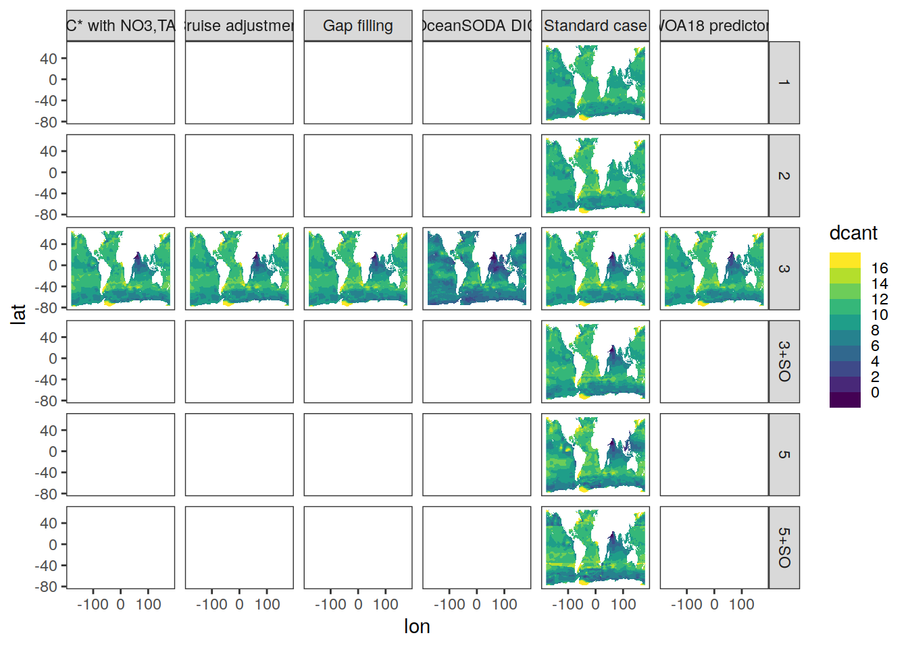
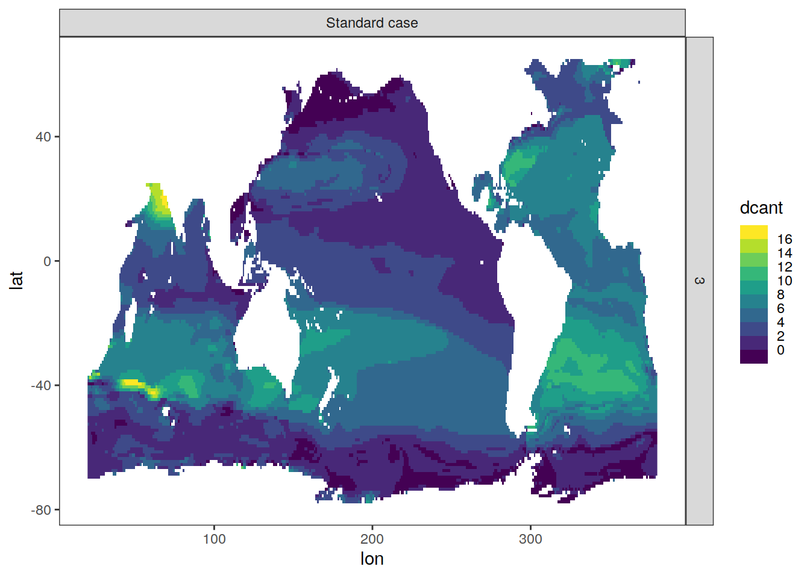

OIA computation
Jens Daniel Müller
03 February, 2023
Last updated: 2023-02-03
Checks: 7 0
Knit directory:
ocean_interior_acidification/
This reproducible R Markdown analysis was created with workflowr (version 1.7.0). The Checks tab describes the reproducibility checks that were applied when the results were created. The Past versions tab lists the development history.
Great! Since the R Markdown file has been committed to the Git repository, you know the exact version of the code that produced these results.
Great job! The global environment was empty. Objects defined in the global environment can affect the analysis in your R Markdown file in unknown ways. For reproduciblity it’s best to always run the code in an empty environment.
The command set.seed(20230202) was run prior to running
the code in the R Markdown file. Setting a seed ensures that any results
that rely on randomness, e.g. subsampling or permutations, are
reproducible.
Great job! Recording the operating system, R version, and package versions is critical for reproducibility.
Nice! There were no cached chunks for this analysis, so you can be confident that you successfully produced the results during this run.
Great job! Using relative paths to the files within your workflowr project makes it easier to run your code on other machines.
Great! You are using Git for version control. Tracking code development and connecting the code version to the results is critical for reproducibility.
The results in this page were generated with repository version 8fcace6. See the Past versions tab to see a history of the changes made to the R Markdown and HTML files.
Note that you need to be careful to ensure that all relevant files for
the analysis have been committed to Git prior to generating the results
(you can use wflow_publish or
wflow_git_commit). workflowr only checks the R Markdown
file, but you know if there are other scripts or data files that it
depends on. Below is the status of the Git repository when the results
were generated:
Ignored files:
Ignored: .Rhistory
Ignored: .Rproj.user/
Untracked files:
Untracked: code/Workflowr_project_managment.R
Unstaged changes:
Modified: .gitignore
Modified: analysis/_site.yml
Deleted: analysis/about.Rmd
Deleted: analysis/license.Rmd
Note that any generated files, e.g. HTML, png, CSS, etc., are not included in this status report because it is ok for generated content to have uncommitted changes.
These are the previous versions of the repository in which changes were
made to the R Markdown (analysis/compute_OIA.Rmd) and HTML
(docs/compute_OIA.html) files. If you’ve configured a
remote Git repository (see ?wflow_git_remote), click on the
hyperlinks in the table below to view the files as they were in that
past version.
| File | Version | Author | Date | Message |
|---|---|---|---|---|
| Rmd | 8fcace6 | jens-daniel-mueller | 2023-02-03 | calculated OIA layer |
| html | 78b3180 | jens-daniel-mueller | 2023-02-03 | Build site. |
| Rmd | dde599d | jens-daniel-mueller | 2023-02-03 | completed basis OIA computation |
| html | db079b9 | jens-daniel-mueller | 2023-02-02 | Build site. |
| Rmd | 808fabc | jens-daniel-mueller | 2023-02-02 | added RMD for computation |
center <- -160
boundary <- center + 180
target_crs <- paste0("+proj=robin +over +lon_0=", center)
# target_crs <- paste0("+proj=eqearth +over +lon_0=", center)
# target_crs <- paste0("+proj=eqearth +lon_0=", center)
# target_crs <- paste0("+proj=igh_o +lon_0=", center)
worldmap <- ne_countries(scale = 'small',
type = 'map_units',
returnclass = 'sf')
worldmap <- worldmap %>% st_break_antimeridian(lon_0 = center)
worldmap_trans <- st_transform(worldmap, crs = target_crs)
# ggplot() +
# geom_sf(data = worldmap_trans)
coastline <- ne_coastline(scale = 'small', returnclass = "sf")
coastline <- st_break_antimeridian(coastline, lon_0 = 200)
coastline_trans <- st_transform(coastline, crs = target_crs)
# ggplot() +
# geom_sf(data = worldmap_trans, fill = "grey", col="grey") +
# geom_sf(data = coastline_trans)
bbox <- st_bbox(c(xmin = -180, xmax = 180, ymax = 65, ymin = -78), crs = st_crs(4326))
bbox <- st_as_sfc(bbox)
bbox_trans <- st_break_antimeridian(bbox, lon_0 = center)
bbox_graticules <- st_graticule(
x = bbox_trans,
crs = st_crs(bbox_trans),
datum = st_crs(bbox_trans),
lon = c(20, 20.001),
lat = c(-78,65),
ndiscr = 1e3,
margin = 0.001
)
bbox_graticules_trans <- st_transform(bbox_graticules, crs = target_crs)
rm(worldmap, coastline, bbox, bbox_trans, bbox_graticules)
# ggplot() +
# geom_sf(data = worldmap_trans, fill = "grey", col="grey") +
# geom_sf(data = coastline_trans) +
# geom_sf(data = bbox_graticules_trans)
lat_lim <- ext(bbox_graticules_trans)[c(3,4)]*1.002
lon_lim <- ext(bbox_graticules_trans)[c(1,2)]*1.005
# ggplot() +
# geom_sf(data = worldmap_trans, fill = "grey90", col = "grey90") +
# geom_sf(data = coastline_trans) +
# geom_sf(data = bbox_graticules_trans, linewidth = 1) +
# coord_sf(crs = target_crs,
# ylim = lat_lim,
# xlim = lon_lim,
# expand = FALSE) +
# theme(
# panel.border = element_blank(),
# axis.text = element_blank(),
# axis.ticks = element_blank()
# )Libraries
basinmask <- basinmask %>%
filter(MLR_basins == "5") %>%
select(lon, lat, basin)Read data
Delta Cant
file_out <- paste0(path_out, "dcant_emlr_cstar_mueller_94-04-14.nc")
dcant_3d_read_mdim <-
read_mdim(file_out)
ggplot() +
geom_stars(data = dcant_3d_read_mdim %>%
filter(period == "1994 - 2004",
depth == 50)) +
facet_grid(MLR_basins~Version_ID_group) +
scale_fill_viridis_b(breaks = c(-Inf, seq(0,16,2), Inf),
na.value = "transparent")
| Version | Author | Date |
|---|---|---|
| 78b3180 | jens-daniel-mueller | 2023-02-03 |
dcant_3d_tibble <- dcant_3d_read_mdim %>%
filter(Version_ID_group == "Standard case",
MLR_basins == "3") %>%
as_tibble()
rm(dcant_3d_read_mdim)
dcant_3d_tibble <- dcant_3d_tibble %>%
drop_na()
# dcant_3d_tibble <- dcant_3d_tibble %>%
# filter(lon == 335.5,
# lat == 0.5)
dcant_3d_tibble %>%
filter(depth == 500) %>%
ggplot() +
geom_raster(aes(lon, lat, fill = dcant)) +
facet_grid(MLR_basins~Version_ID_group) +
scale_fill_viridis_b(breaks = c(-Inf, seq(0,16,2), Inf),
na.value = "transparent")
| Version | Author | Date |
|---|---|---|
| 78b3180 | jens-daniel-mueller | 2023-02-03 |
# dcant_3d_tibble %>%
# ggplot() +
# geom_path(aes(dcant, depth, col = period)) +
# scale_y_reverse()S04_cant_3d <-
read_csv(paste(path_preprocessing,
"S04_tcant_3d.csv",
sep = ""))Required data
Observational
Currently, following data sets are used for mapping:
- GLODAPv2_2016b_MappedClimatologies, with variables
- Phosphate (-> phosphate_star)
- Silicate
- Oxygen (-> AOU)
- TAlk (surface only)
- TCO2 (surface only)
variables <-
c("TCO2", "TAlk", "PO4", "silicate", "NO3")
# i_variable <- variables[1]
for (i_variable in variables) {
temp <- read_csv(paste(
path_preprocessing,
paste("GLODAPv2_2016_MappedClimatology_", i_variable, ".csv", sep = ""),
sep = ""
))
if (exists("GLODAP_predictors")) {
GLODAP_predictors <- full_join(GLODAP_predictors, temp)
}
if (!exists("GLODAP_predictors")) {
GLODAP_predictors <- temp
}
}
rm(temp, i_variable, variables)
GLODAP_predictors <- GLODAP_predictors %>%
rename(phosphate = PO4,
nitrate = NO3,
talk = TAlk,
tco2 = TCO2)
# removed na's attributable to slightly different coverage of predictor fields
GLODAP_predictors <- GLODAP_predictors %>%
drop_na()- World Ocean Atlas 2018
- Salinity
- Temperature
- Neutral density
WOA18_predictors <-
read_csv(paste(path_preprocessing,
"WOA18_sal_temp.csv",
sep = ""))
WOA18_predictors_nuts_O2 <-
read_csv(paste(path_preprocessing,
"WOA18_nuts_O2.csv",
sep = ""))Join data
WOA18 + GLODAP
WOA18 and GLODAP predictor climatologies are merged. Only horizontal grid cells with observations from both predictor fields are kept.
# join deep water predictors
predictors <- right_join(GLODAP_predictors,
WOA18_predictors)
predictors <- rquery::natural_join(predictors, WOA18_predictors_nuts_O2,
by = c("lon", "lat", "depth", "basin_AIP"),
jointype = "LEFT") %>%
as_tibble()
predictors <- predictors %>%
drop_na()
rm(GLODAP_predictors, WOA18_predictors_nuts_O2, WOA18_predictors)predictors + Cant
# predictors %>% distinct(depth) %>% pull()
# S04_cant_3d %>% distinct(depth) %>% pull()
# dcant_3d_tibble %>% distinct(depth) %>% pull()
DIC_1994 <-
inner_join(predictors,
dcant_3d_tibble %>% filter(period == "1994 - 2004") %>%
select(-period))
DIC_1994 <- DIC_1994 %>%
mutate(tco2 = tco2 - 0.8 * dcant)
DIC_2004 <- DIC_1994 %>%
mutate(tco2 = tco2 + dcant)
DIC_2014 <-
inner_join(DIC_2004 %>% select(-dcant),
dcant_3d_tibble %>% filter(period == "2004 - 2014") %>%
select(-period))
DIC_2014 <- DIC_2014 %>%
mutate(tco2 = tco2 + dcant)
DIC_1800 <- inner_join(
DIC_1994,
S04_cant_3d %>% select(lon, lat, depth, tcant)
)
DIC_1800 <- DIC_1800 %>%
mutate(tco2 = tco2 - tcant)
DIC <- bind_rows(
DIC_1800 %>% mutate(tref = "1800"),
DIC_1994 %>% mutate(tref = "1994"),
DIC_2004 %>% mutate(tref = "2004"),
DIC_2014 %>% mutate(tref = "2014")
)
rm(DIC_1800, DIC_1994, DIC_2004, DIC_2014, predictors, dcant_3d_tibble, S04_cant_3d)
acidification <- DIC %>%
mutate(
carb(
flag = 15,
var1 = talk * 1e-6,
var2 = tco2 * 1e-6,
S = sal,
T = temp,
P = depth / 10,
Pt = phosphate * 1e-6,
Sit = silicate * 1e-6,
k1k2 = "s20",
kf = "dg"
)
)
acidification <- acidification %>%
select(-c(dcant, tcant, flag, S, T, Patm, P, DIC, ALK))
acidification <- acidification %>%
mutate(hyd_ion = 10^(-pH))
calc_delta_total <- function(x) (x - first(x))
calc_delta_interval <- function(x) (x - lag(x, default = first(x)))
acidification_trend <- acidification %>%
arrange(tref) %>%
group_by(lat, lon, depth) %>%
mutate(
across(
.cols = c(tco2, pH, pCO2insitu, HCO3, CO3, OmegaAragonite, OmegaCalcite, hyd_ion),
.fns = list(delta_total = calc_delta_total, delta_interval = calc_delta_interval)
)
) %>%
ungroup()acidification_layer <- acidification_trend %>%
mutate(depth_layer = cut(
depth,
c(0, 50, 100, 250, 500, 1000, 1500, 2000, 3000),
include.lowest = TRUE
)) %>%
drop_na() %>%
select(c(lat, lon, depth_layer, tref), where(is.numeric)) %>%
fgroup_by(lat, lon, depth_layer, tref) %>% {
add_vars(
fgroup_vars(., "unique"),
fmean(., keep.group_vars = FALSE) %>% add_stub(pre = FALSE, "_mean"),
fsd(., keep.group_vars = FALSE) %>% add_stub(pre = FALSE, "_sd")
)
}
acidification_layer %>%
filter(depth_layer %in% unique(acidification_layer$depth_layer)[c(1,5)],
tref != 1800) %>%
ggplot(aes(lon, lat, fill = CO3_delta_total_mean)) +
geom_raster() +
scale_fill_viridis_c(direction = -1) +
facet_grid(tref ~ depth_layer) +
coord_quickmap()
acidification_layer %>%
filter(depth_layer %in% unique(acidification_layer$depth_layer)[c(1,5)],
tref != 1800) %>%
ggplot(aes(lon, lat, fill = CO3_delta_interval_mean)) +
geom_raster() +
scale_fill_viridis_c(direction = -1) +
facet_grid(tref ~ depth_layer) +
coord_quickmap()
acidification_layer %>%
filter(depth_layer %in% unique(acidification_layer$depth_layer)[c(1,5)],
tref != 1800) %>%
ggplot(aes(lon, lat, fill = pH_delta_total_mean)) +
geom_raster() +
scale_fill_viridis_c(direction = -1) +
facet_grid(tref ~ depth_layer) +
coord_quickmap()
acidification_zonal <- acidification_trend %>%
group_by(tref) %>%
nest() %>%
mutate(zonal = map(.x = data, ~m_zonal_mean_sd(.x))) %>%
select(-data) %>%
unnest(zonal)
acidification_zonal %>%
filter(
tref!= 1800
) %>%
p_section_zonal_continous_depth(var = "tco2_delta_total_mean",
plot_slabs = "n",
breaks = c(-Inf,seq(0,80,10), Inf),
title_text = NULL) +
facet_grid(basin_AIP~tref)
acidification_zonal %>%
filter(
tref!= 1800
) %>%
p_section_zonal_continous_depth(var = "CO3_delta_total_mean",
plot_slabs = "n",
breaks = c(-Inf,seq(-0.00005,0.00001,0.00001), Inf),
title_text = NULL) +
facet_grid(basin_AIP~tref)
acidification_global_section <- acidification_trend %>%
group_by(tref) %>%
nest() %>%
mutate(zonal = map(.x = data, ~m_section_global_mean_sd(.x))) %>%
select(-data) %>%
unnest(zonal)
p_section_global(
df = acidification_global_section %>%
filter(tref == "2014"),
var = "pH_mean",
plot_slabs = "n"
)
| Version | Author | Date |
|---|---|---|
| 78b3180 | jens-daniel-mueller | 2023-02-03 |
p_section_global(
df = acidification_global_section %>%
filter(tref == "1994"),
var = "pH_delta_interval_mean",
plot_slabs = "n"
)
| Version | Author | Date |
|---|---|---|
| 78b3180 | jens-daniel-mueller | 2023-02-03 |
p_section_global(
df = acidification_global_section %>%
filter(tref == "2014"),
var = "hyd_ion_delta_interval_mean",
plot_slabs = "n"
)
| Version | Author | Date |
|---|---|---|
| 78b3180 | jens-daniel-mueller | 2023-02-03 |
basinmask <- basinmask %>%
mutate(area = earth_surf(lat, lon))
acidification_profiles <- full_join(basinmask,
acidification_trend %>% select(-c(basin_AIP, MLR_basins, Version_ID_group))) %>%
drop_na() %>%
relocate(tref) %>%
mutate(across(gamma:hyd_ion_delta_interval,
~ . * area))
acidification_profiles <- acidification_profiles %>%
group_by(tref, basin, depth) %>%
summarise(across(gamma:hyd_ion_delta_interval,
~ sum(.) / sum(area))) %>%
ungroup()
acidification_profiles %>%
select(tref, basin, depth, contains("delta_total")) %>%
pivot_longer(-c(tref:depth),
names_to = "variable",
values_to = "delta_total") %>%
filter(tref != 1800) %>%
ggplot(aes(delta_total, depth, col = tref)) +
geom_vline(xintercept = 0) +
geom_path() +
scale_y_reverse() +
facet_grid(basin ~ variable, scales = "free_x")
| Version | Author | Date |
|---|---|---|
| 78b3180 | jens-daniel-mueller | 2023-02-03 |
acidification_profiles %>%
select(tref, basin, depth, contains("delta_interval")) %>%
pivot_longer(-c(tref:depth),
names_to = "variable",
values_to = "delta_interval") %>%
filter(!(tref %in% c(1800,1994))) %>%
ggplot(aes(delta_interval, depth, col = tref)) +
geom_vline(xintercept = 0) +
geom_path() +
scale_y_reverse() +
facet_grid(basin ~ variable, scales = "free_x")
| Version | Author | Date |
|---|---|---|
| 78b3180 | jens-daniel-mueller | 2023-02-03 |
Write ouput
acidification_trend %>%
write_csv(paste0(path_OIA, "OIA.csv"))
acidification_layer %>%
write_csv(paste0(path_OIA, "OIA_layer.csv"))
acidification_zonal %>%
write_csv(paste0(path_OIA, "OIA_zonal.csv"))
acidification_global_section %>%
write_csv(paste0(path_OIA, "OIA_global_section.csv"))
acidification_profiles %>%
write_csv(paste0(path_OIA, "OIA_profiles.csv"))
sessionInfo()R version 4.2.2 (2022-10-31)
Platform: x86_64-pc-linux-gnu (64-bit)
Running under: openSUSE Leap 15.4
Matrix products: default
BLAS: /usr/local/R-4.2.2/lib64/R/lib/libRblas.so
LAPACK: /usr/local/R-4.2.2/lib64/R/lib/libRlapack.so
locale:
[1] LC_CTYPE=en_US.UTF-8 LC_NUMERIC=C
[3] LC_TIME=en_US.UTF-8 LC_COLLATE=en_US.UTF-8
[5] LC_MONETARY=en_US.UTF-8 LC_MESSAGES=en_US.UTF-8
[7] LC_PAPER=en_US.UTF-8 LC_NAME=C
[9] LC_ADDRESS=C LC_TELEPHONE=C
[11] LC_MEASUREMENT=en_US.UTF-8 LC_IDENTIFICATION=C
attached base packages:
[1] stats graphics grDevices utils datasets methods base
other attached packages:
[1] seacarb_3.3.1 SolveSAPHE_2.1.0 oce_1.7-10
[4] gsw_1.1-1 stars_0.6-0 abind_1.4-5
[7] ggpattern_1.0.1 ggh4x_0.2.3 khroma_1.9.0
[10] kableExtra_1.3.4 ggdist_3.2.0 ggalluvial_0.12.3
[13] terra_1.6-41 sf_1.0-9 rnaturalearth_0.1.0
[16] geomtextpath_0.1.1 colorspace_2.0-3 marelac_2.1.10
[19] shape_1.4.6 ggforce_0.4.1 metR_0.13.0
[22] scico_1.3.1 patchwork_1.1.2 collapse_1.8.9
[25] forcats_0.5.2 stringr_1.4.1 dplyr_1.0.10
[28] purrr_0.3.5 readr_2.1.3 tidyr_1.2.1
[31] tibble_3.1.8 ggplot2_3.4.0 tidyverse_1.3.2
[34] workflowr_1.7.0
loaded via a namespace (and not attached):
[1] googledrive_2.0.0 ellipsis_0.3.2 class_7.3-20
[4] rprojroot_2.0.3 fs_1.5.2 rstudioapi_0.14
[7] proxy_0.4-27 farver_2.1.1 bit64_4.0.5
[10] fansi_1.0.3 lubridate_1.9.0 xml2_1.3.3
[13] codetools_0.2-18 cachem_1.0.6 knitr_1.41
[16] polyclip_1.10-4 rquery_1.4.9 jsonlite_1.8.3
[19] broom_1.0.1 dbplyr_2.2.1 compiler_4.2.2
[22] httr_1.4.4 backports_1.4.1 assertthat_0.2.1
[25] fastmap_1.1.0 gargle_1.2.1 cli_3.4.1
[28] later_1.3.0 tweenr_2.0.2 htmltools_0.5.3
[31] tools_4.2.2 rnaturalearthdata_0.1.0 gtable_0.3.1
[34] glue_1.6.2 Rcpp_1.0.9 cellranger_1.1.0
[37] jquerylib_0.1.4 vctrs_0.5.1 rqdatatable_1.3.1
[40] svglite_2.1.0 lwgeom_0.2-10 xfun_0.35
[43] ps_1.7.2 rvest_1.0.3 timechange_0.1.1
[46] lifecycle_1.0.3 googlesheets4_1.0.1 getPass_0.2-2
[49] MASS_7.3-58.1 scales_1.2.1 vroom_1.6.0
[52] hms_1.1.2 promises_1.2.0.1 parallel_4.2.2
[55] yaml_2.3.6 memoise_2.0.1 sass_0.4.4
[58] stringi_1.7.8 highr_0.9 e1071_1.7-12
[61] checkmate_2.1.0 rlang_1.0.6 pkgconfig_2.0.3
[64] systemfonts_1.0.4 distributional_0.3.1 evaluate_0.18
[67] lattice_0.20-45 labeling_0.4.2 bit_4.0.5
[70] processx_3.8.0 tidyselect_1.2.0 wrapr_2.0.9
[73] cubelyr_1.0.2 magrittr_2.0.3 R6_2.5.1
[76] generics_0.1.3 DBI_1.1.3 pillar_1.8.1
[79] haven_2.5.1 whisker_0.4 withr_2.5.0
[82] units_0.8-0 sp_1.5-1 modelr_0.1.10
[85] crayon_1.5.2 KernSmooth_2.23-20 utf8_1.2.2
[88] tzdb_0.3.0 rmarkdown_2.18 isoband_0.2.6
[91] grid_4.2.2 readxl_1.4.1 data.table_1.14.6
[94] callr_3.7.3 git2r_0.30.1 webshot_0.5.4
[97] reprex_2.0.2 digest_0.6.30 classInt_0.4-8
[100] httpuv_1.6.6 textshaping_0.3.6 munsell_0.5.0
[103] viridisLite_0.4.1 bslib_0.4.1